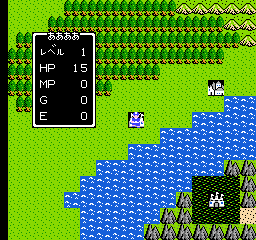
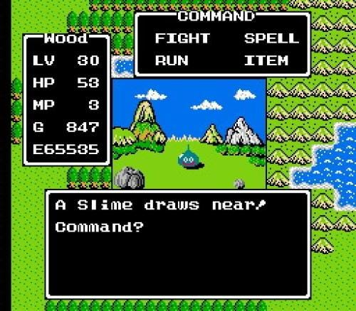

Dragon Quest is one of the first console role-playing games. The player controls a single character who is able to travel from town to town exploring on his quest. He can equip various weapons and armour and battles enemy monsters in one-on-one combat. As more enemies are defeated, the hero becomes stronger and able to explore greater distances as he completes his quest. Ultimately, the hero must defeat an evil boss marking the end of his adventure. This game formula was replicated in most, if not all, console RPGs.
 As the first game in the series, Dragon Quest heavily differs from its successors in several aspects. All battles are one-on-one; there is only one player character, and enemies never appear in groups. There are no vehicles. The overworld can only be travelled on foot, and the Chimera wing and Zoom spell only return the player to Tantegel Castle. Tantegel Castle is the only save point in the game. Acquired weapons, armour and shields will automatically replace the previous item, which is then discarded or sold to the store. This is changed in the remakes. There is no helmet slot. Keys are consumed when used; new ones can be purchased at one of the "key houses" in Tantegel, Rimuldar, or Cantlin. The first key in any quest must be purchased in Rimuldar, since the others are behind doors that require a key to open. There are separate shops for buying holy water, unlike later games where it is sold in item shops. Caves are dark, and must be lit up with a torch or the Glow spell. These have limited range. The Glow spell range is larger, but diminishes and eventually wears out, unlike the torch. The range is effectively reduced in the remakes, since the scale of the caves is larger, but the range is not increased to compensate. There are special menu commands to climb stairs and open chests, which are done automatically in later games. In the Japanese version, certain commands require choosing a direction, since characters only face forward.